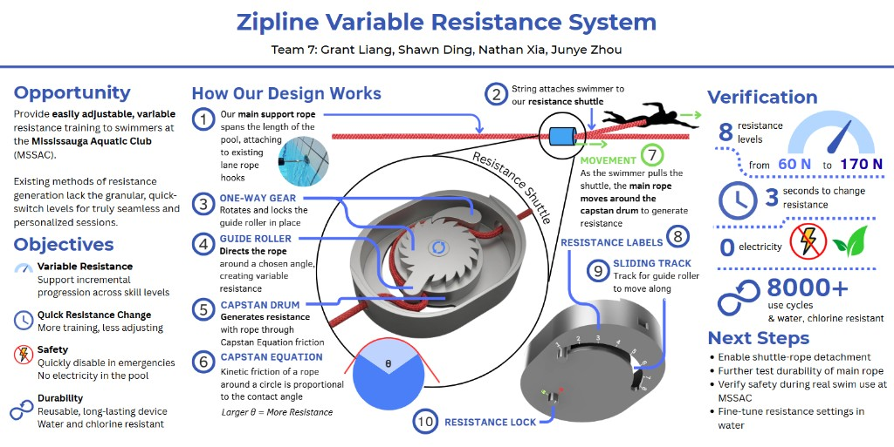
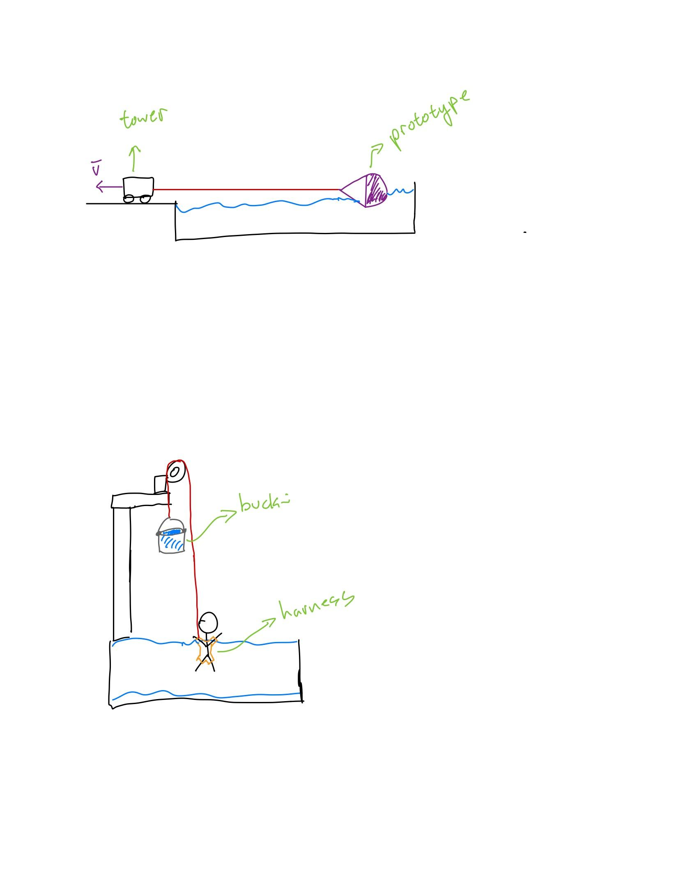

Praxis II / Beta Release & Showcase
Zipline Variable Resistance System
A pool length rope, a capstan shuttle, and eight resistance levels for swimmers who need to change load in seconds, not minutes.
What this project was
Praxis II ended in a showcase, not a single PDF drop. Our team spent Beta Release comparing four very different ways to add resistance in the water, then converged on a zipline style shuttle that uses the capstan equation: wrap angle on a drum sets how hard it is to pull the main rope. The one pager and poster below are what we brought to showcase night. The longer Beta Release documents capture how we got there, including requirements tables, material Pugh charts, and test plans.
The opportunity came from the Mississauga Aquatic Club. Coaches want granular, quick switching resistance during sets. Drag socks, parachutes, and other tools work, but they often cap out at a few coarse settings. Our job was to show a credible path to many integrated levels in one device that stays safe near a pool (no electricity over the water) and fits in existing storage.

From four concepts to one direction
Early Beta Release work treated resistance as an open question. We sketched and prototyped a zipline capstan shuttle, a parachute with adjustable area, a spool system inspired by rowing machines, and a skirt that changes drag in the water. They were represented at different fidelities on purpose: some had physical builds, some had CAD and animation, some were still paper sketches. Pairwise comparison and Toulmin style arguments helped us drop ideas that failed safety or functionality before we over invested.
The zipline direction won because it could hit the requirement spread without pumping water in and out mid practice, and because the physics scaled cleanly with a dial. Nathan and Grant pushed hard on CAD and mechanism layout. Sean and I spent a lot of time on documentation, verification planning, and tying numbers back to the updated requirement tables in the showcase document.
Arrow keys work when the gallery is focused. Click an image to zoom.
How the shuttle works
A support rope spans the lane and clips to existing lane rope hardware. Each swimmer attaches with a short tether to the resistance shuttle. Inside the shuttle, a guide roller sets how much rope wraps on the capstan drum. A one way gear and resistance lock let the coach or swimmer pick a level from 1 to 8 without re rigging the whole lane. Larger wrap angle means more friction from the capstan equation, so the same pull produces more opposing force.
In symbols, the resisting force scales with hold tension and wrap angle through the exponential capstan relation. That is why a mechanical dial can produce many distinct levels even though the hardware stays compact.


Requirements we held ourselves to
The showcase document updated several objectives beyond the original RFP, especially around safety. The tables below are imported from our Beta Release / showcase requirement work. They are abbreviated for the web, but the structure matches what we submitted. Bold emphasis in the source marked user safety additions and clarified wording.
Goal 1: Design for functionality
| ID | Requirement | Evaluation criterion |
|---|---|---|
| 1.1 | Provide at least 5 integrated resistance levels between 95 N and 210 N opposing the swimmer's horizontal motion. | More distinct levels is better. |
| 1.2 | The difference between any two adjacent levels must be 2.2 kg (5 lb) or less. | Smaller step between adjacent levels is better. |
Justification in the report ties 1.1 to parachute drag estimates at about 2 m/s and compares against equipment that often tops out near three coarse settings.
Goal 2: Design for usability
| ID | Requirement | Evaluation criterion |
|---|---|---|
| 2.1 | Time to change between any two resistance levels must be less than 30 seconds. | Shorter change time is better. |
Our showcase prototype targeted about 3 seconds per change, which is well inside this bound.
Goal 3: Design for safety (excerpt)
| ID | Requirement | Evaluation criterion |
|---|---|---|
| 3.1 | Handle at least 1000 N for the designed application without structural failure. | Higher safe load is better. |
| 3.2 | Fully disable resistance with less than 133 N user applied force, without erroneous release. | Closer to 133 N (below) is better. |
| 3.3 | Disable resistance within 5 seconds at any stage. | Shorter release time is better (≤ 5 s). |
| 3.4 | Re arm quick release within 30 seconds. | Shorter re arm time is better (≤ 30 s). |
| 3.5 | Any electricity at least 5 m horizontal and 1.5 m vertical from the pool; none above the pool. | Lower voltage is better. |
Goal 4 and storage (excerpt)
| ID | Requirement | Evaluation criterion |
|---|---|---|
| 4.1 | Last 18 400 use cycles (25 m per cycle) without failure. | More cycles without failure is better. |
| 4.2 | Materials retain breaking force after chlorine exposure per ISO 17608. | Pass or fail. |
| 5.1 | Fit within a 13 × 13 × 11 inch storage space. | Smaller packed size is better. |
Main rope material selection
Showcase planning included a Pugh comparison of polyester, nylon, and polypropylene for the main rope. We cared about chlorine resistance, water resistance, abrasion resistance, and a bit of flexibility so tension could adjust without feeling rigid. Polyester won because it balanced abrasion with pool chemistry better than nylon, and beat polypropylene on abrasion even though flexibility was slightly lower.
We specified 3/8 inch double braided polyester for friction endurance and shape retention over many cycles.
Pugh chart (polypropylene as datum)
| Criterion | Polyester | Nylon | Polypropylene (datum) |
|---|---|---|---|
| Chlorine resistance | + | − | 0 |
| Water resistance | − | − | 0 |
| Abrasion resistance | + | + | 0 |
| Flexibility | − | + | 0 |
Pugh chart (polyester as datum)
| Criterion | Polyester (datum) | Nylon | Polypropylene |
|---|---|---|---|
| Chlorine resistance | 0 | − | − |
| Water resistance | 0 | − | + |
| Abrasion resistance | 0 | + | − |
| Flexibility | 0 | − | + |
Verification and showcase results
Beta Release 5 and the showcase one pager describe how we planned to measure force: tow the prototype at controlled speed, record a force gauge on video, and average multiple trials per level. Requirement 3.2 disable tests borrow from seatbelt release literature (under 133 N). The poster summarizes what we were ready to claim at showcase.
| Theme | Result | Notes |
|---|---|---|
| Variable resistance | 8 levels, 60 N to 170 N range | Finer steps than many existing tools. |
| Quick adjustment | About 3 seconds per level change | Supports fast paced swim sets. |
| Safety | Quick release, no electricity at the pool | Matches updated safety objectives. |
| Durability | 8000+ use cycles (more testing planned) | Rope friction life still being validated. |
| Compactness | About 13 × 17 × 4 cm shuttle | Fits MSSAC storage constraints. |
The poster conclusion is honest: the core resistance concept worked in testing, but product polish, long rope life, and in water validation at MSSAC were still open when we presented.
Next steps we listed
- Create a mechanism to detach the shuttle from the main rope easily.
- Further test and improve durability of the main rope.
- Verify safety during real swim use at MSSAC.
- Fine tune resistance level settings in the water.
Longer term, we pictured multiple swimmers on one lane rope, each with their own shuttle, so a whole lane could run personalized resistance without crowding the deck.
What I took from showcase
Beta Release taught me to keep multiple concepts alive without pretending they are equally ready. Showcase forced us to compress that story into something a coach could understand in thirty seconds: problem, mechanism, numbers, next steps. I spent a lot of time in the requirement tables and verification sections because that is where I could see whether our claims were actually testable.
This project pairs with the Year 1 design portfolio writeup on the same RFP, which focuses on CTMFs and process reflection. This page is the hardware and showcase side: the poster, the shuttle, and the tables we used to argue we were ready for the pool.
If you want every page of Beta Release, showcase planning, and the full requirement justifications, those PDFs are the source. This site version is meant to be readable, with real tables and images, not a full document dump.